ECOSYSTEM 8 SKILLS
Ecossistema para o Desenvolvimento de Habilidades Humanas Sustentáveis e Tecnológicas.
Venha participar do Ecosystem8Skills, um ecossistema humano único. Participe dessa jornada do mindset linear ao circular e posteriormente do sistêmico ao ecossistêmico, uma oportunidade para atuar no desenvolvimento da consciência humana e da materialização da economia circular. Este método integra ainda o Congresso Internacional Circular Tech Skills (3ª Edição) e a plataforma EcosysTechSkill. Venha fazer parte! Inscreva-se no link abaixo e vamos juntos nessa Jornada de Linear ao Circular! Você pode vivenciar 2, 6 ou 8 meses desse programa com avaliação do grau de Circularidade, Palestras e Cursos.

Ecosystem8Skills
28 de Maio de 2026 às 16h On-line
VAMOS FAZER JUNTOS
ESSA JORNADA CIRCULAR
As 4 dimensões do Ecosystem8Skills
Economia e Ecossistema Circular
Aplicados:- Em resíduos
- Construção
- Psicologia
- Normatização
Mineração e reciclagem na economia circular
- Embalagens
- Economia
- Eletrônicos
- Plásticos
- Resíduos
- Outros materiais...
Habilidades Circulares, Sistêmicas e Ecossistêmicas
- Educação
- Pensamento Sistêmico
- E-Circular e ESG
- Cultura circular
Tecnologias
- ESG Tech
- Greentech
- Circular Tech
- HR Tech
A Jornada Ecosystem8Skills
O Ecosystem8Skills é mais do que uma formação — é um movimento. Um espaço onde empreendedores, profissionais, pesquisadores e apoiadores se encontram para aprender, cocriar e transformar territórios.
Aqui, você vivencia:
Desenvolvimento de Soft Skills, Hard Skills e Meta Skills para a Circularidade.
Aprendizagem aplicada com desafios reais.
Projetos práticos que fortalecem seu negócio ou sua comunidade.
Trocas profundas que ampliam visão e repertório.
Networking qualificado que vira colaboração e novas oportunidades.
Conexões com diferentes atores, cada um contribuindo com sua força.
Conexões que fortalecem o ecossistema
De forma leve e colaborativa, grandes empresas e instituições governamentais podem se aproximar como apoiadoras — abrindo caminhos, inspirando inovação e fortalecendo o território, sem ocupar o espaço de quem empreende.
Pesquisadores também fazem parte
O programa é um campo fértil para quem quer investigar, testar, cocriar e transformar conhecimento em impacto real ao lado de empreendedores e comunidades.
Governança Sistêmica e Ecossistêmica
A governança do Ecosystem8Skills nasce do entendimento de que nenhuma transformação acontece sozinha. Ela é construída a partir de conexões vivas, múltiplos saberes e olhares complementares — sempre guiada pelos princípios da economia circular, da colaboração e da inteligência ecossistêmica.
Cada membro tem um papel essencial. Cada voz importa. Cada contribuição fortalece o movimento.
Conselho Consultivo
Visão estratégica, orientação e alinhamento com os princípios da economia circular e da mentalidade ecossistêmica.
Comitês Temáticos
Grupos de coordenação que atuam em frentes específicas, garantindo fluidez, prática e evolução contínua.
Rede de Realização e Apoio
Instituições que sustentam, fortalecem e ampliam o impacto do ecossistema.
DIREÇÃO DA JORNADA
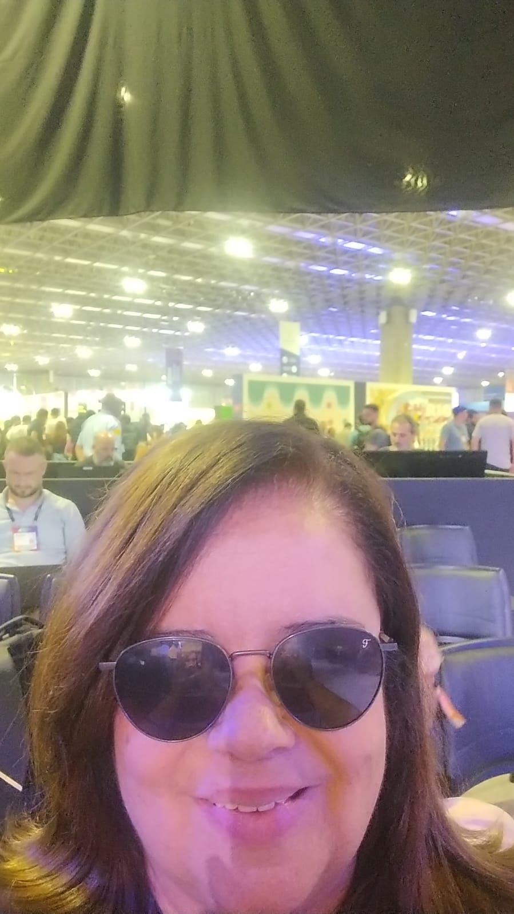
Presidente e Orquestradora do Ecosystem8Skills Celene Brito CEO EcoRecitec · Gerente CEC City SalvadorCONSELHO CONSULTIVO
 CONSELHEIRO
Oswaldo Serrano de Oliveira
CEDAE
CONSELHEIRO
Oswaldo Serrano de Oliveira
CEDAE
 CONSELHEIRA
Ekaterina Egorova
Moscou Circular
CONSELHEIRA
Ekaterina Egorova
Moscou Circular
 CONSELHEIRO
Dr. Carlos Oliveira Augusto
Engenheiro Civil Sénior - Especialista em Sustentabilidade e Doutor em Construção Circular
Univ. Lusíada de Lisboa
Construção Circular
CONSELHEIRO
Dr. Carlos Oliveira Augusto
Engenheiro Civil Sénior - Especialista em Sustentabilidade e Doutor em Construção Circular
Univ. Lusíada de Lisboa
Construção Circular
 CONSELHEIRA
Juliana Galliano
Comitê ESG Tech
CONSELHEIRA
Juliana Galliano
Comitê ESG Tech
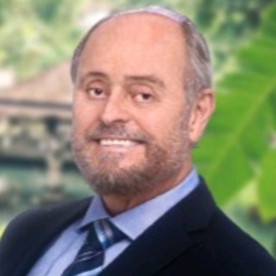
CONSELHEIRO Eugênio Badaró Expert em ESGCoordenadores de Comitês do Ecosystem8Skills
Comitê de Construção Circular
 COORDENADOR
Dr. Celso Bastos
Construção Circular
COORDENADOR
Dr. Celso Bastos
Construção Circular
Comitê de Resíduos e Economia Circular
 COORDENADOR
Paulo Vinícius Martins
Grupo GVC · Gerente de Negócios
Resíduos, ESG, Engenharia Ambiental
COORDENADOR
Paulo Vinícius Martins
Grupo GVC · Gerente de Negócios
Resíduos, ESG, Engenharia Ambiental
Comitê de Cultura Social Circular
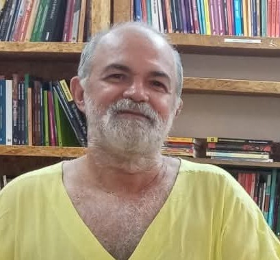
COORDENADOR Gilson Santana TGS Produções Artísticas · Diretor Expert em Arte e CulturaComitê de Escolas Circulares
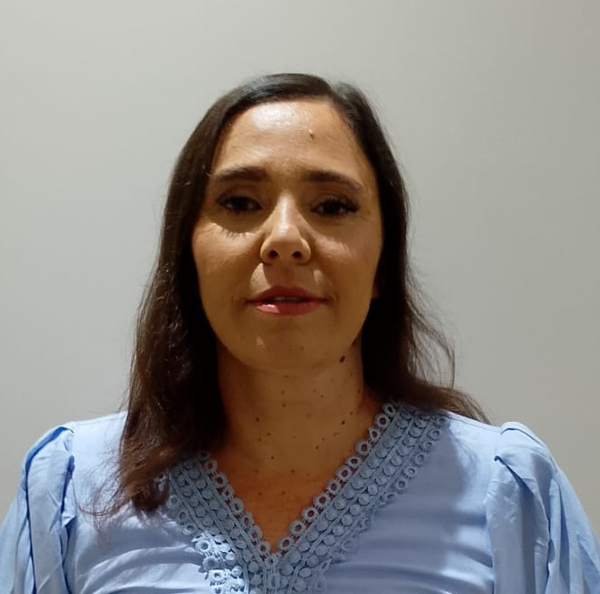
COORDENADORA Olivia de Alcantara Rocha Colégio Estadual do Campo de Cabrália · Coordenadora Pedagógica Formação Continuada / Mentorias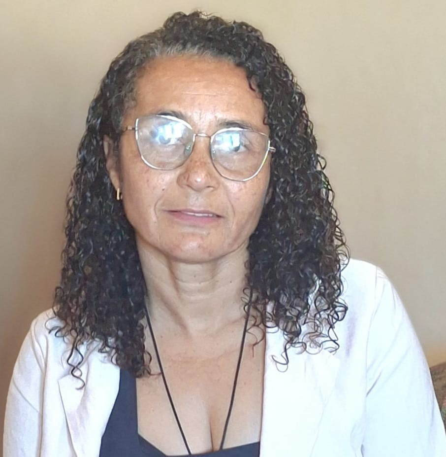
COORDENADORA Tereza Brandão Coordenadora PedagógicaComitê de Comunicação Social Circular
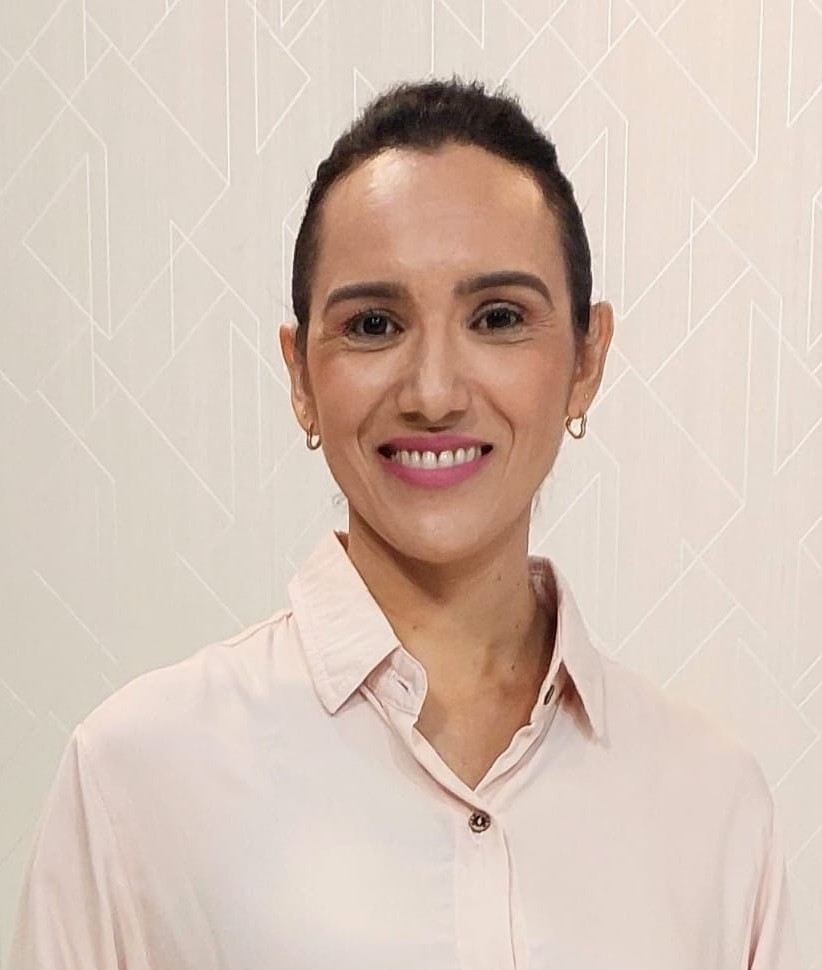
COORDENADORA Gorete Santos Midar TV Cidade Verde · Jornalista ComunicaçãoComitê de Carbono Verde e Circular
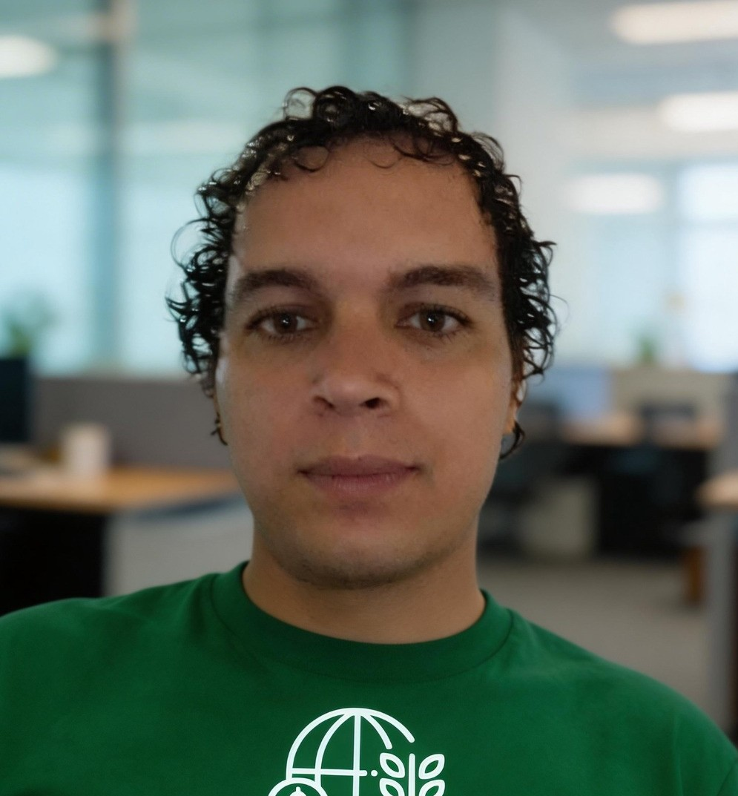
COORDENADOR Alan Aurelio Silva Recuperação Tributária Verde · SócioREALIZAÇÃO


Apoio Institucional
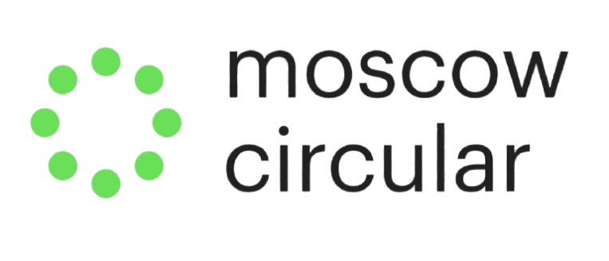
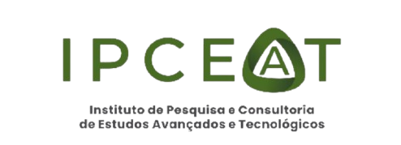
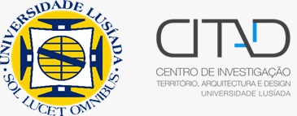
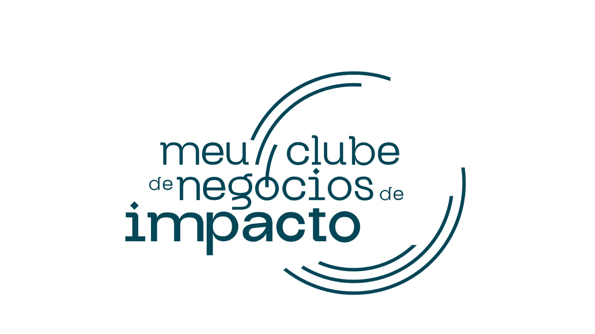


Origem do Ecosystem8Skills
O Ecosystem8Skills nasceu da força e da inspiração geradas nas duas edições do Congresso Internacional Circular Tech Skills, realizadas em 2025. Foram encontros marcados por:
- Palestrantes internacionais do Brasil, Portugal, Rússia, Holanda, Índia e Suécia.
- Experiências práticas e aprendizagem aplicada.
- Diálogos profundos sobre circularidade e territórios.
- Conexões transformadoras entre atores de diferentes setores.
- Projetos que ganharam vida a partir das trocas.
Esses congressos acenderam a chama que hoje se transforma em um ecossistema vivo, pulsante e colaborativo.
I e II Congresso Internacional
Circular Tech Skills
Nasce o
Ecosystem8Skills
ARENA PRINCIPAL
PALESTRANTES
 DIREÇÃO TÉCNICA
Celene Brito
EcoRecitec · CEC City Salvador
Mindset e Habilidades Circulares
DIREÇÃO TÉCNICA
Celene Brito
EcoRecitec · CEC City Salvador
Mindset e Habilidades Circulares
 PALESTRANTE
Arlinda Negreiros
FIEB
Gestão e Economia Circular
PALESTRANTE
Arlinda Negreiros
FIEB
Gestão e Economia Circular
 PALESTRANTE
Dr. Henrique Vasquez
Finep
Financiamento à Economia Circular
PALESTRANTE
Dr. Henrique Vasquez
Finep
Financiamento à Economia Circular
 PALESTRANTE
Danilo e Daisy
Decolores
Circular Tech Skills
PALESTRANTE
Dr. Celso Bastos
CEC City Vitória · Construtora OUT
Construção Circular
PALESTRANTE
Danilo e Daisy
Decolores
Circular Tech Skills
PALESTRANTE
Dr. Celso Bastos
CEC City Vitória · Construtora OUT
Construção Circular
 PALESTRANTE
Jorge Soto
ABNT
Normas ISO 323 — Economia Circular
PALESTRANTE
Jorge Soto
ABNT
Normas ISO 323 — Economia Circular
 PALESTRANTE
Anderson Láudano
Carbongreen
Engenharia Ambiental
PALESTRANTE
Anderson Láudano
Carbongreen
Engenharia Ambiental
 PALESTRANTE
Paulo Vinícios Martins
Retec
Reinserção de Resíduos Industriais
PALESTRANTE
Paulo Vinícios Martins
Retec
Reinserção de Resíduos Industriais
 PALESTRANTE
Georgia Albertoni
Abiplast
Rastreabilidade de Resíduos Plásticos
PALESTRANTE
Georgia Albertoni
Abiplast
Rastreabilidade de Resíduos Plásticos
 PALESTRANTE
Giscardi Souza
Sindiplasba
Seleção & Separação de Resíduos
PALESTRANTE
Giscardi Souza
Sindiplasba
Seleção & Separação de Resíduos
 PALESTRANTE
Efimova Polina
Construção Circular Moscou
Clube CEC Moscou
PALESTRANTE
Efimova Polina
Construção Circular Moscou
Clube CEC Moscou
 PALESTRANTE
Ivan Euler
Prefeitura de Salvador · SECIS
Cidades Resilientes e Circulares
PALESTRANTE
Ivan Euler
Prefeitura de Salvador · SECIS
Cidades Resilientes e Circulares
 PALESTRANTE
Ana Christina Romano
Grupo Neoenergia
Projeto Vale Luz
PALESTRANTE
Ana Christina Romano
Grupo Neoenergia
Projeto Vale Luz
 PALESTRANTE
Ademir Brescansin
Green Eletron
Logística Reversa de Eletrônicos
PALESTRANTE
Ademir Brescansin
Green Eletron
Logística Reversa de Eletrônicos
 PALESTRANTE
Gustavo Alves
Ellen MacArthur Foundation LatAm
Design Circular na Cadeia de Valor
PALESTRANTE
Gustavo Alves
Ellen MacArthur Foundation LatAm
Design Circular na Cadeia de Valor
 PALESTRANTE
Ilja Donkervoort
UE · Holanda
Política de Economia Circular
PALESTRANTE
Ilja Donkervoort
UE · Holanda
Política de Economia Circular
 PALESTRANTE
Linn Lindfred
Circularista AB · Suécia
IA na Economia Circular
PALESTRANTE
Linn Lindfred
Circularista AB · Suécia
IA na Economia Circular
 PALESTRANTE
Shalini Goyal Bhalla
ICCE · Índia
Panorama Global da Economia Circular
PALESTRANTE
Shalini Goyal Bhalla
ICCE · Índia
Panorama Global da Economia Circular
FOTOS DO EVENTO


ASSESSORIA
Obs: Todos os apoios ou patrocínios para serem validados deverão ser encaminhados para as empresas EcoRecitec
E-mails: eco.recitec@gmail.com · celene.recitec@donaverde.com.br
PARCEIROS & REALIZADORES
Organizações que tornaram este evento possível